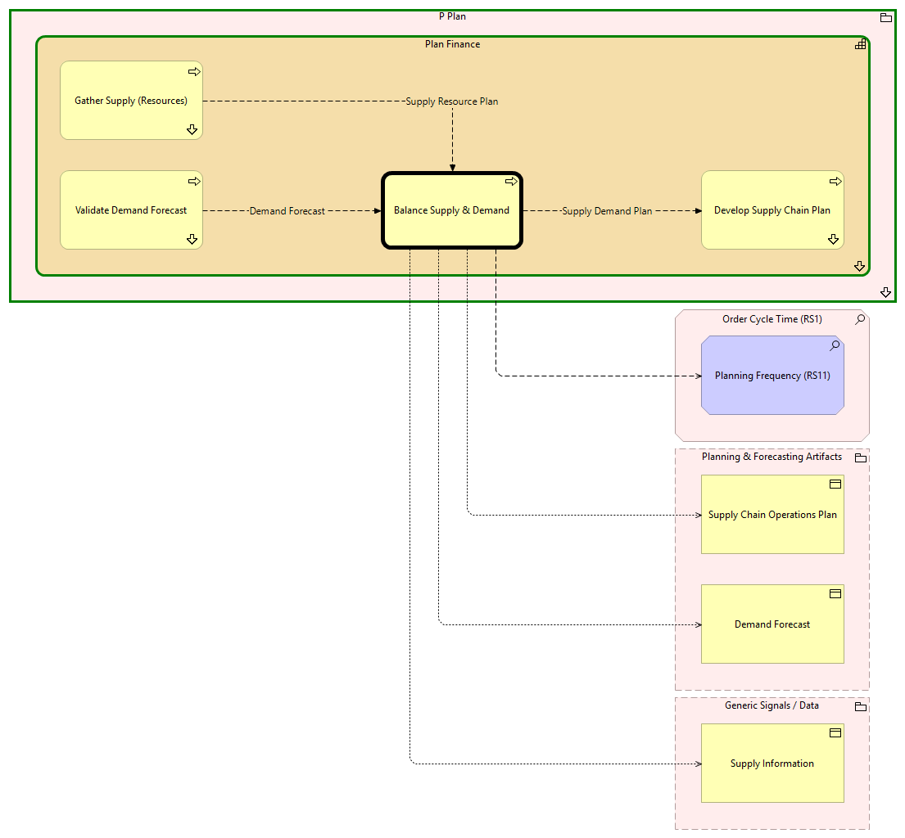

Balance Supply & Demand - Context
(
)

generated_by
build_archi_xml.py::gen_proc_node_context_view
generator_path
pedro/capabilities/build_archi_xml_assign/build_archi_xml_assign.py
run_at
2026-10-19T21:02:27
view_type
process_context
P Plan
Plan Finance
Balance Supply & Demand
Develop Supply Chain Plan
Develop Supply Chain Plan - Context
Gather Supply (Resources)
Gather Supply (Resources) - Context
Validate Demand Forecast
Validate Demand Forecast - Context
Plan Finance - Processes
P Plan - Processes
Order Cycle Time (RS1)
Planning Frequency (RS11)
Planning & Forecasting Artifacts
Demand Forecast
Supply Chain Operations Plan
Generic Signals / Data
Supply Information
Supply Demand Plan
Balance Supply & Demand
Develop Supply Chain Plan
Balance Supply & Demand
Planning Frequency (RS11)
Balance Supply & Demand
Demand Forecast
Balance Supply & Demand
Supply Chain Operations Plan
Balance Supply & Demand
Supply Information
Supply Resource Plan
Gather Supply (Resources)
Balance Supply & Demand
Demand Forecast
Validate Demand Forecast
Balance Supply & Demand